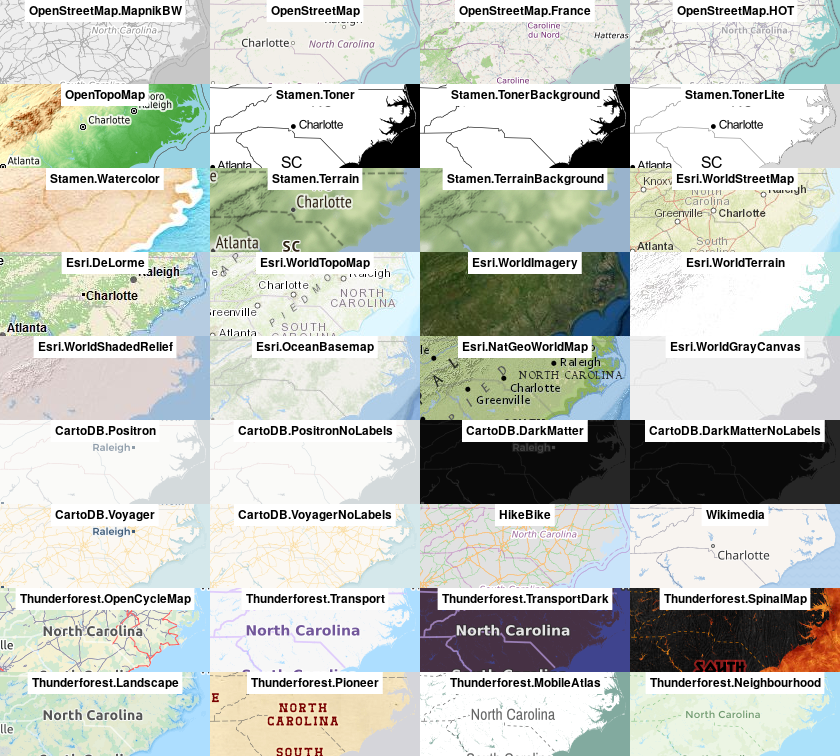
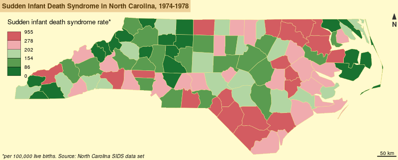
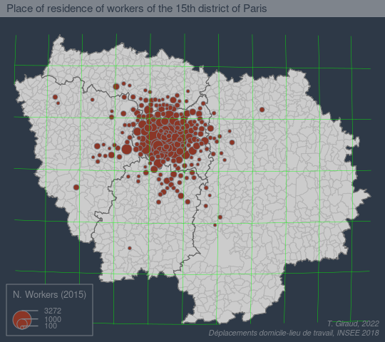
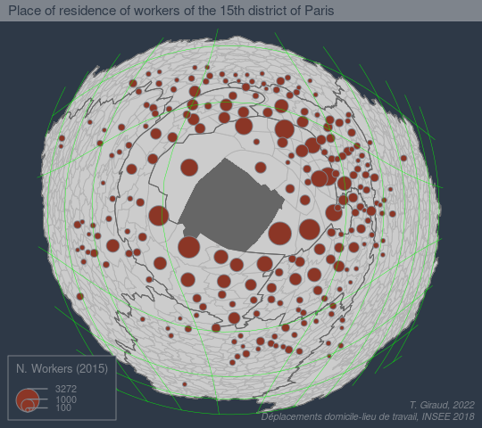

mtq <-mf_get_mtq()# Plot the base mapmf_map(x = mtq)
Choropleth map
mtq <-mf_get_mtq()# Plot a choropleth mapmf_map(x = mtq, var ="MED", type ="choro")
Parameters customisation
mtq <-mf_get_mtq()# Plot a choropleth mapmf_map(x = mtq, var ="MED", type ="choro",pal ="Dark Mint",breaks ="quantile",nbreaks =6,leg_title ="Median Income\n(euros)",leg_val_rnd =-2,leg_pos ="topright")
Map layout
mtq <-mf_get_mtq()# Plot a choropleth mapmf_map(x = mtq, var ="MED", type ="choro",pal ="Dark Mint",breaks ="quantile",nbreaks =6,leg_title ="Median Income\n(euros)",leg_val_rnd =-2,leg_pos ="topright")# Plot a layout elementsmf_title("Wealth in Martinique, 2015")mf_credits("T. Giraud\nSources: INSEE & IGN, 2018")mf_scale(size =5)mf_arrow('topleft')
Theme and layout
mtq <-mf_get_mtq()# Set a theme mf_theme(x ="green")# Plot a choropleth mapmf_map(x = mtq, var ="MED", type ="choro",pal ="Dark Mint",breaks ="quantile",nbreaks =6,leg_title ="Median Income\n(euros)",leg_val_rnd =-2,leg_pos ="topright")# Plot a layout elementsmf_title("Wealth in Martinique, 2015")mf_credits("T. Giraud\nSources: INSEE & IGN, 2018")mf_scale(size =5)mf_arrow('topleft')
Inset
mtq <-mf_get_mtq()# Set a theme mf_theme(x ="green")# Plot a choropleth mapmf_map(x = mtq, var ="MED", type ="choro",pal ="Dark Mint",breaks ="quantile",nbreaks =6,leg_title ="Median Income\n(euros)",leg_val_rnd =-2,leg_pos ="topright")# Add an inset world mapmf_inset_on(x ="worldmap", pos ="right")mf_worldmap(mtq, col ="#0E3F5C")mf_inset_off()# Plot a layout elementsmf_title("Wealth in Martinique, 2015")mf_credits("T. Giraud\nSources: INSEE & IGN, 2018")mf_scale(size =5)mf_arrow('topleft')
Margins
mtq <-mf_get_mtq()# Set a theme mf_theme(x ="green")# Start an empty map with extra marginsmf_init(x = mtq, expandBB =c(0,0,0,.3))# Plot a choropleth mapmf_map(x = mtq, var ="MED", type ="choro",pal ="Dark Mint",breaks ="quantile",nbreaks =6,leg_title ="Median Income\n(euros)",leg_val_rnd =-2,leg_pos ="topright",add =TRUE)# Add an inset world mapmf_inset_on(x ="worldmap", pos ="right")mf_worldmap(mtq, col ="#0E3F5C")mf_inset_off()# Plot a layout elementsmf_title("Wealth in Martinique, 2015")mf_credits("T. Giraud\nSources: INSEE & IGN, 2018")mf_scale(size =5)mf_arrow('topleft')
Export
mtq <-mf_get_mtq()# Set a theme mf_theme(x ="green")# Start the export with extra marginsmf_export(x = mtq, filename ="img/map.svg", width =5, expandBB =c(0,0,0,.3))# Plot a choropleth mapmf_map(x = mtq, var ="MED", type ="choro",pal ="Dark Mint",breaks ="quantile",nbreaks =6,leg_title ="Median Income\n(euros)",leg_val_rnd =-2,leg_pos ="topright",add =TRUE)# Add an inset world mapmf_inset_on(x ="worldmap", pos ="right")mf_worldmap(mtq, col ="#0E3F5C")mf_inset_off()# Plot a layout elementsmf_title("Wealth in Martinique, 2015")mf_credits("T. Giraud\nSources: INSEE & IGN, 2018")mf_scale(size =5)mf_arrow('topleft')# close exportdev.off()
Also called “relief contours”, “illuminated contours” or “shaded contour lines”, the Tanaka method enhances the representation of topography on a map by using shaded contour lines. The result is a 3D-like map.
linemap displays a map made of lines using a data frame of gridded data.
maptiles
To create maps from tiles, maptiles downloads, composes and displays tiles from a large number of providers (e.g. OpenStreetMap, Stamen, Esri, CARTO, or Thunderforest).
maptiles
library(sf)library(maptiles)# import North Carolina countiesnc_raw <-st_read(system.file("shape/nc.shp", package="sf"), quiet =TRUE)# Project to EPSG:3857nc <-st_transform(nc_raw, "EPSG:3857")# dowload tiles and compose raster (SpatRaster)nc_osm <-get_tiles(nc, crop =TRUE)# display mapmf_theme(mar =c(0,0,0,0))mf_raster(nc_osm)mf_map(nc, col =NA, add =TRUE)# add creditmf_credits(txt =get_credit("OpenStreetMap"))
maptiles

Mini maps of most of the tiles providers
cartogram

cartogram
fisheye
Transform base maps using log-azimuthal projection


fisheye
library(fisheye)library(mapsf)# Import datasetncraw <-st_read(system.file("shape/nc.shp", package="sf"), quiet =TRUE)nc <-st_transform(ncraw, 3857)mf_map(nc, col ="grey90")mf_map(nc[51, ], add =TRUE, col ="grey40")mf_title("Original Map")# transform the basemapnc_fe <-fisheye(nc, centre = nc[51, ])mf_map(nc_fe, col ="grey90")mf_map(nc_fe[51, ], add =TRUE, col ="grey40")mf_title("Log-Azimuthal Projection")
fisheye
popcircle
This one-function package computes circles with areas scaled to a variable and displays them using a compact layout. Original polygons are (roughly) scaled to fit inside these circles.
remotes::install_github("rCarto/popcircle")
popcircle
library(rnaturalearth)library(sf)library(wbstats)library(popcircle)library(mapsf)# Get countriesctry <-ne_countries(scale =50, returnclass ="sf")ctry <-st_transform(ctry, "ESRI:54030")# Only keep the largest polygons of multipart polygons for a few countries# (e.g. display only continental US)frag_ctry <-c("US", "RU", "FR", "IN", "ES", "NL", "CL", "NZ", "ZA")largest_ring =function(x) { x$ids <-1:nrow(x) pols =st_cast(x, "POLYGON", warn =FALSE) spl =split(x = pols, f = pols$ids)do.call(rbind, (lapply(spl, function(y) y[which.max(st_area(y)), ])))}st_geometry(ctry[ctry$iso_a2 %in% frag_ctry, ]) <-st_geometry(largest_ring(ctry[ctry$iso_a2 %in% frag_ctry, ]))# Get and merge datadata_pop <-wb_data(indicator ="SP.POP.TOTL",start_date =2021,end_date =2021)ctry_pop <-merge(ctry[, "iso_a2"], data_pop, by.x ="iso_a2", by.y ="iso2c")# Computes circles and polygonsres_pop <-popcircle(x = ctry_pop, var ="SP.POP.TOTL")circles_pop <- res_pop$circlesshapes_pop <- res_pop$shapes# Create the figuremf_theme(mar =c(0, 0, 0, 0),bg ="#e6ebe0",fg ="grey50")mf_export(x = circles_pop,filename ="pop.png",width =800,res =100)# display circles and polygonsmf_map( circles_pop,col ="#9bc1bc",border ="white",add = T)mf_map( shapes_pop,col ="#ed6a5a95",border ="#ed6a5a",add =TRUE,lwd = .3)# labelscircles_pop$lab <-paste0(circles_pop$country,'\n',round(circles_pop$SP.POP.TOTL /1000000))mf_label(x = circles_pop[1:36, ],var ="lab",halo =TRUE,overlap = T,pos =3,cex =seq(1, 0.4, length.out =36),r = .15)# titlemtext("Population",side =3,adj =0.01,padj =-1.5,col ="grey50",cex =2)mtext("Millions of inhabitants\nin 2021",side =3,adj =0.01,padj =0.4,col ="grey50",cex =1.2)# cerditsmf_credits(txt ="T. Giraud, 2023 - World Development Indicators, 2023",pos ="bottomright")dev.off()
spikemap
Lazaro Gamio, Karen Yourish and Bill Marsh, 2020-04-08
spikemap
It is possible to map quantities with circles, squares or other simple geometric symbols, spikemap uses spikes.
remotes::install_github("rCarto/spikemap")
spikemap
library(sf)library(spikemap)library(mapsf)# import the dataset from the packagecom <-st_read(system.file("gpkg/com.gpkg", package="spikemap"))# theme mf_theme(mar =c(0,0,0,0), bg ="#e1e5eb", fg ="grey30")# save figure as spiky.png in img foldermf_export(x = com, filename ="img/spiky.png", width =1000, res =100)# plot the base mapmf_map(com, col="#99aed1", border ="#e1e5eb", lwd =0.2, add = T)# display spikes for municipalities under 1000 inhabitants.# use fixmax arg to allow multiple spike plots with the same scale.spikemap(x = com[com$pop<=1000, ], var ="pop",inches =2.3, fixmax =500000,col ="#ffffff90", border ="#94000090", lwd = .5,legend.pos ="x")# display spikes for other municipalities# use locator() to pick a place for the legend or use "bottomleft".spikemap(x = com[com$pop>1000, ], var ="pop",inches =2.3, fixmax =500000,col ="#ffffff", border ="#940000", lwd =1.1,legend.pos =c(799307.2, 6128000),legend.title.txt ="Population",legend.values.rnd =-3)# get the tips of the spikeslbl <-spikelabel(x = com, var ="pop",inches =2.3, fixmax =500000)lbl <- lbl[order(lbl$pop, decreasing = T),]# display only the 12 first, use various cex and halomf_label(lbl[1:12,], var ="name",pos =3, offset = .5,halo = T, bg ="#99aed150",cex =c(1.3, 1.1, 1, rep(.8,12)),col ="grey30")# add scale bar, north arrow, title, sources...mf_scale(size =20, pos=c(629638.7 ,6136862.3 ), lwd =1)mf_arrow(pos ="topright", col ="grey60")mf_credits(paste0("ADMIN EXPRESS COG édition 2019, IGN\n","T. Giraud, 2020 | spikemap 0.1.0"))mf_title(txt ="Population \nin Occitanie", inner = T, line =8, cex =2.5, font =3, fg ="grey30", bg =NA)dev.off()
Bivand, Roger S. 2021. “Progress in the R Ecosystem for Representing and Handling Spatial Data.”Journal of Geographical Systems 23 (4): 515–46. https://doi.org/10.1007/s10109-020-00336-0.
Giraud, Timothée, and Nicolas Lambert. 2017. “Reproducible Cartography.” In Advances in Cartography and GIScience, 173–83. Springer International Publishing. https://doi.org/10.1007/978-3-319-57336-6_13.
———. 2019. “Reproducible Workflow for Cartography - Migrants Deaths in the Mediterranean.” In Proceedings of the ICA, 2:1–7. Copernicus GmbH. https://doi.org/10.5194/ica-proc-2-38-2019.
Le Goix, Renaud, Ronan Ysebaert, Timothée Giraud, Marc Lieury, Guilhem Boulay, Mathieu Coulon, Sébastien Rey-Coyrehourcq, et al. 2021. “Unequal Housing Affordability Across European Cities. The ESPON Housing Database, Insights on Affordability in Selected Cities in Europe.”Cybergeo, April. https://doi.org/10.4000/cybergeo.36478.
Lovelace, Robin, Jakub Nowosad, and Jannes Muenchow. 2019. Geocomputation with R. CRC Press. https://r.geocompx.org/.
Pebesma, Edzer, and Roger Bivand. 2023. Spatial Data Science: With Applications in R. CRC Press. https://r-spatial.org/book/.